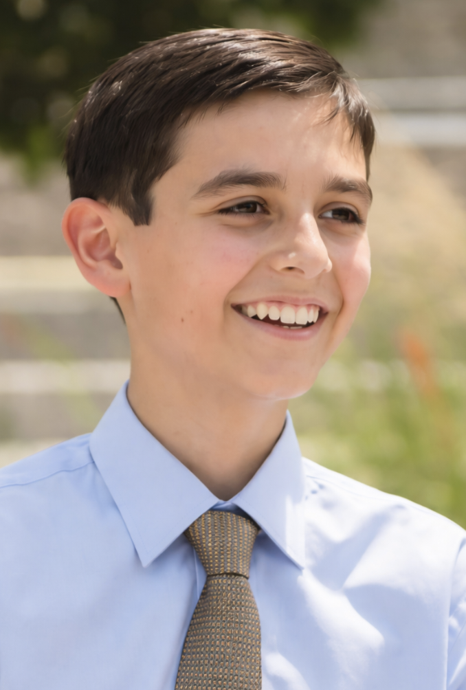

Founder, argue.lol
I created argue.lol, a competitive AI debate arena.
I’m in high school. I build with AI, work on prediction markets, and restore old telescopes.

I created argue.lol, a competitive AI debate arena.
I created Invariant Studio, a platform to design and test Automated Market Makers.
I restored an ~80 year old Skyscope reflector, winning the Antique Restoration Award and First Place Junior award at the 87th Stellafane convention.
I restored a home-built reflecting telescope on a German Equatorial Mount, winning the Special Award for a Junior Project at the 88th Stellafane convention.
Co-founded a P2P lending system and trading terminal for Manifold Markets with Ryan McComb.
Wrote some blog posts about telescopes/astronomy.
Wrote the cover story for a magazine with 120,000+ readers in November '25.
An article I wrote for my middle school newspaper won second place in a national contest. It was an exposé on the markup the school's snack shop adds to the goods they obtain.
Andreessen Horowitz
MNX
Working on the growth team for the company building the derivatives layer for the AI economy.
The Supercycle
Wrote some blog posts and did some podcasts about prediction markets. Find us at supercycle.blog
Westchester Amateur Astronomers
I've served on WAA's advisory board since 2023. Over that time, I've revamped their website at westchesterastronomers.org, planned events for the club, and organized large outreach events across Westchester County.
Springfield Telescope Makers
The Springfield Telescope Makers run the annual Stellafane Convention, known for leading the world in amateur telescope making since 1923. I've helped lead various events at convention and in 2024 I was nominated to be one of their ~100 members worldwide.
Business Insider
Profiled for my work in prediction markets.
Read the feature →Briefs Finance
Profiled for my track record shorting overvalued candidates on prediction markets.
Read the feature →Doom Debates (Liron Shapira)
Joined Liron Shapira to talk about AI risk and why assigning a specific probability to doom scenarios doesn't hold up.
Listen to the interview →